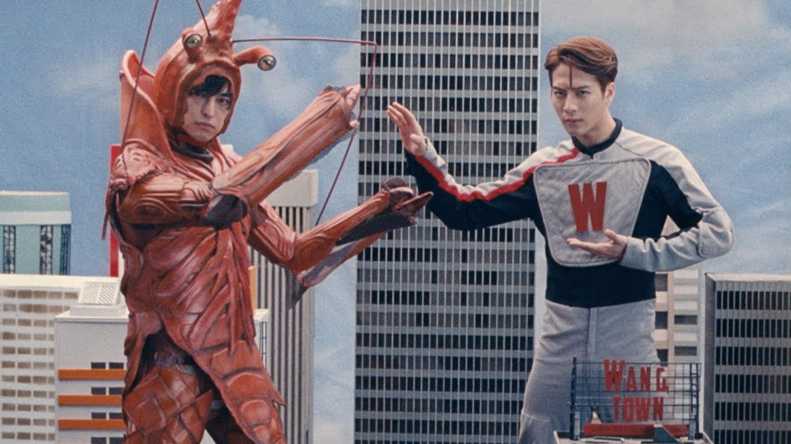

- Home
- Trending
- Subscriptions
- Library
- History
- Your videos
- Watch later
- Favorites
- Show more
Subscriptions
-

- DW Documentary
-

- Tasty
-

- Business Insider
- Pro Home Cooks
- Big Hit Labels
- Chefi la cutite
-

- BTS
- Show 110 more
Jackson Wang
Galantis
Watch Now
YouTube Originals
Jackson Wang
3,61M subscribers
Uploads
24M views * 6 months ago

56M views * 11 months ago
18M views * one year ago
22M views * one year ago
6,4M views * one year ago

22M views * one year ago
12M views * one year ago
13M views * one year ago
16M views * 2 years ago
45M views * 3 years ago